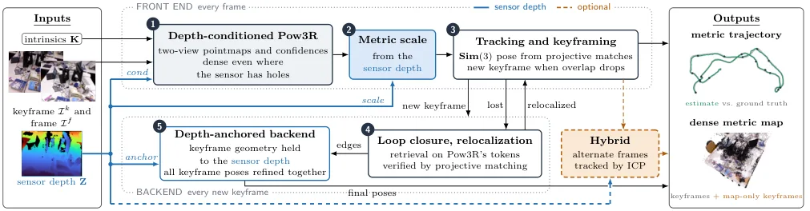
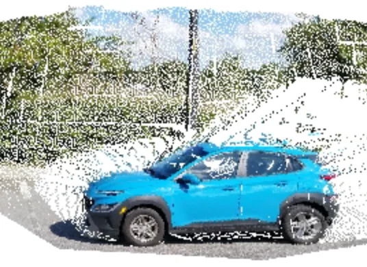
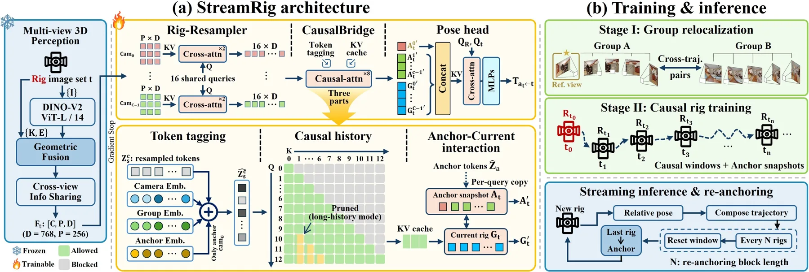
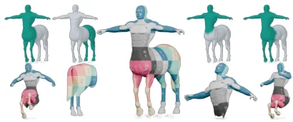
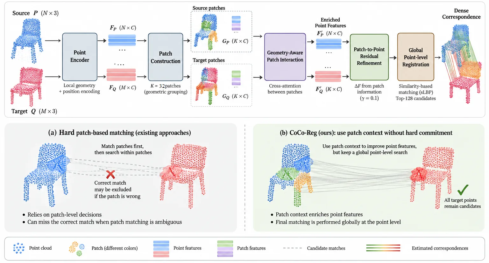
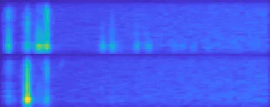
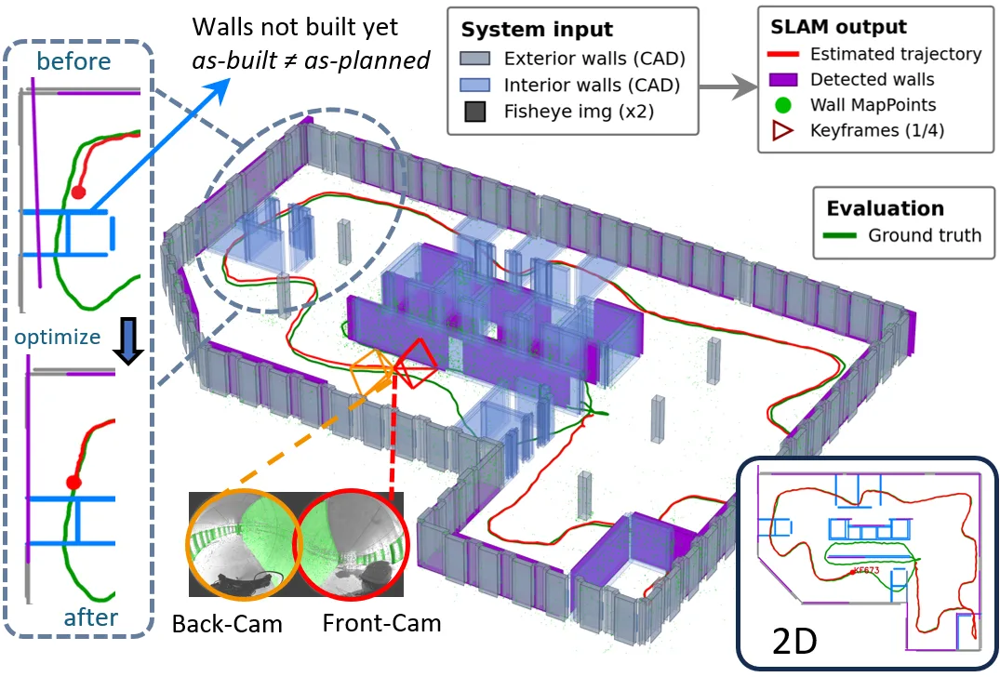
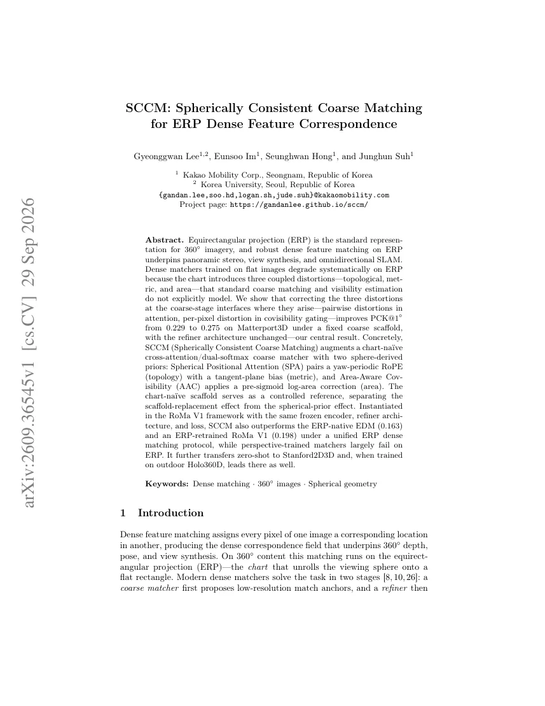

新论文 · 日期 2026-09-30 · score 30 · S层 · Geometry Foundation Models / 3D Foundation Models · cs.RO, cs.CV
内容级别：完整单篇海报
作者：Christopher Kolios, Ishaan Mehta, Sasa Janjic, Yeganeh Bahoo
评分 30/10
RGB-D SLAM两视图重建先验深度条件化度量尺度恢复后端锚定MASt3R-SLAM 扩展混合 ICP深度敏感性分析
一句话工作总结：首个把传感器深度作为两视图点图网络先验的 RGB-D SLAM：深度在条件化、度量尺度、后端锚定三处可分离进入；24 序列上比 MASt3R-SLAM 快 1.6×、关键帧 ATE 低 15%、无尺度逐帧误差低 3.1×、Chamfer 低 30%，混合 ICP 变体 25.3 FPS。
Pow3R-SLAM 是一个实时 RGB-D SLAM 系统，用 Pow3R 做跟踪与建图。受 MASt3R-SLAM（用两视图 3D 重建先验的单目 SLAM）启发，作者把深度从“被融合的几何”改为“网络预测的先验”。传统 RGB-D SLAM 在深度图稀疏时吃力，而 Pow3R 用已有深度得到条件更好的点图，并从两视图的光度、深度与内参推断空洞处深度。按 MASt3R-SLAM 协议在 TUM、7-Scenes…
We present Pow3R-SLAM, a real-time RGB-D simultaneous localization and mapping (SLAM) system that uses Pow3R for tracking and mapping. Inspired by MASt3R-SLAM, a recent work on monocular SLAM using two-view 3D…

新论文 · 日期 2026-09-29 · score 20 · S层 · Geometry Foundation Models / 3D Foundation Models · cs.CV
内容级别：完整单篇海报
作者：Brandon Leblanc, Charalambos Poullis
评分 20/10
知识蒸馏前馈 3D 重建SE(3) 位姿监督伪标签流水线COLMAP 替代域特化边缘部署大基线采样
一句话工作总结：把 π³（959M）蒸馏成 102M 学生（9.4× 压缩）并配套神经版 COLMAP：1.6% 算力单机可训；域特化学生在 7-Scenes 上比 COLMAP 准 4×、吞吐 980×，通用零样本在 7-Scenes/DTU completion 上超 COLMAP，但分布外多视图几何不敌教师。
前馈 3D 重建模型靠模型与数据规模取胜，成本把多数研究组和边缘部署排除在外；无传感器生成 3D 监督又依赖慢而不可靠的 SfM。OTT3R 是一个知识蒸馏框架，在单台 2 GPU 工作站上同时缓解这两个问题：把 959M 的 π³ 蒸馏成 102M 学生，压缩 9.4×、推理最多快 7×、训练算力约 VGGT 的 1.6%。配套伪标签流水线可在两台消费级 GPU 上 3.5 小时为 667K 图像语料生成稠密点图…
Feed-forward 3D reconstruction models have achieved impressive performance by scaling model and dataset size, but their cost excludes most research groups and precludes edge deployment. Additionally, generatin…

新论文 · 日期 2026-10-01 · score 16 · S层 · Geometry Foundation Models / 3D Foundation Models · cs.CV, cs.RO
内容级别：完整单篇海报
作者：Yufei Wei, Shuhao Ye, Qi Wang, Xin Zheng
评分 16/10
多相机里程计因果流式推理冻结 3D 基础模型Rig-Resampler锚点快照re-anchoring组重定位预训练仿真到真机零样本
一句话工作总结：首个把冻结多视图 3D 基础模型接到因果流式多相机里程计的框架：74.6M 可训参数、相对位姿唯一监督；四套 rig 上漂移最低，五相机推理 26.2 ms/2.6 GiB 优于单目 CUT3R 的 31.3 ms/3.9 GiB。
移动机器人与车辆普遍带同步多相机 rig，但许多流式 3D 基础模型按单目输入设计，浪费了 rig 内已知几何。StreamRig 是一个 freeze-and-stream 框架：在一个冻结的多视图 3D 基础模型之上构建已标定 rig 的因果流式里程计。冻结前端用 rig 标定联合感知同步视图，Rig-Resampler 压缩特征，CausalBridge 用带 KV 缓存的因果注意力，轻量位姿头回归 rig…
Mobile robots and vehicles carry synchronized multi-camera rigs, yet many streaming 3D foundation models are designed for monocular input, leaving efficient use of rig geometry a challenge. We present StreamRi…

新论文 · 日期 2026-09-29 · score 14 · S层 · Geometry Foundation Models / 3D Foundation Models · cs.CV
内容级别：完整单篇海报
作者：Jing Li, Yawei Luo, Xiangze Meng, Ying Li
评分 14/10
非刚性形状对应partial-to-full 匹配神经哈密顿算子内蕴神经场谱定位互惠精化稀疏锚点尺度/旋转鲁棒性
一句话工作总结：用稀疏锚点 + 部分形状内蕴几何学一个局部化哈密顿算子，配合算子-对应互惠精化；CUTS'24 定位 IoU 75.15、F1 85.13，跨尺度/旋转波动仅 0.18/0.35 个百分点，稠密对应误差 6.53（×100）。
从稀疏锚点做非刚性 partial-to-full 形状对应，需要先在全表面上定位对应区域，再恢复部分形状与该区域之间的稠密对应。NHO 把稀疏锚点与部分形状的内蕴几何结合，学一个神经哈密顿算子，其局部化特征空间同时编码区域支撑与用于稠密对应的内蕴坐标。它把哈密顿势参数化为内蕴神经场，用锚点证据与谱/几何约束优化；为解决稀疏锚点留下的空间歧义，引入算子估计与对应恢复之间的互惠精化：特征空间给出谱坐标并把匹配限制在其…
Non-rigid partial-to-full shape correspondence from sparse anchors requires identifying the corresponding region on the full surface and recovering dense correspondences between the partial shape and that regi…

新论文 · 日期 2026-09-30 · score 12 · S层 · Geometry Foundation Models / 3D Foundation Models · cs.CV, cs.CL
内容级别：完整单篇海报
作者：Jaewoo Jung, Hyeonseo Yu, Honggyu An, Jisang Han
评分 12/10
多视图 MLLM高斯摘要 token心理重建紧凑 3DGS蒸馏加速物体级分组SPAR-Bench跨视图对应
一句话工作总结：在 MLLM 中插入少量可学高斯拉丁 token 并在中间层解码成紧凑 3DGS，与语言建模联合训练（外加紧凑高斯教师蒸馏加速）；SPAR-Bench 平均 68.5（超 7B 最强基线 5.2 分），SQA3D EM 63.8、Real-3DQA EM 39.2 均刷新。
从多视图图像推理 3D 世界对多模态大模型（MLLM）仍是根本挑战：它们处理单图有效，却难以把跨视图证据整合成一致的 3D 理解。已有工作靠注入 3D 感知缩小差距，但与人仍有明显距离。本文回到人类空间推理：人类大致识别跨视图共同物体、推断视点间相对几何、再拼出粗略 3D 布局。受此启发，Imagine3D-LLM 让模型学会拼装类似的紧凑 3D 表示并据此作答：在图像 token 后追加少量可学的摘要 token…
Reasoning about the 3D world from multi-view images remains a fundamental challenge for Multimodal Large Language Models (MLLMs). While modern MLLMs handle single-image inputs effectively, they struggle to int…

新论文 · 日期 2026-09-29 · score 10 · S层 · Geometry Foundation Models / 3D Foundation Models · cs.CV
内容级别：完整单篇海报
作者：Yuzhen He, Sara Homscheid
评分 10/10
非刚性点云配准稠密对应区域上下文多正样本监督sLBP 全局搜索配对统计分析失败率分析ModelNet10
一句话工作总结：用区域 patch 信息丰富稠密特征、但不在最终搜索前做硬 patch 剪枝；726 个 ModelNet10 物体上 MCE 0.0547 对 DefTransNet 0.1993（低 72.6%），在 670/726 配对物体上更好，物体级失败率 12.4% 对 53.6%。
非刚性点云配准要为形变源面上的每个点找到目标点。点级匹配保留完整目标云，但当不同区域局部几何相似时对应会有歧义；区域或粗到细方法提供更大空间上下文，可一次错误的区域匹配会在稠密匹配前排除正确对应。本文提出 CoCo-Reg：用区域 patch 丰富稠密点特征，但不让 patch 预测限制最终的点级搜索。方法构造最远点采样 patch、在源/目标内与之间交换几何信息、用恒等校正的点重叠监督 patch 相似度，再把区…
Non-rigid point-cloud registration aims to find the corresponding target point for each point on a deforming source surface. Point-level matching keeps the full target cloud available, but correspondence becom…

新论文 · 日期 2026-09-29 · score 22 · A层 · Robust State Estimation / Uncertainty · cs.RO
内容级别：半海报
作者：Minseo Kim, Yina Kim, Jinhwa Hwang, Alex Junho Lee
评分 22/10
几何退化纵向漂移横截面地标退化正交描述子几何验证5-DoF 因子管隧巡检回程重访
一句话工作总结：在轴向退化走廊里用与退化方向正交的横截面地标描述子 + 验证式写回约束纵向漂移；GEODE Shield 上 2.4 m 容差精度从 11.7% 提到 95.6%，Shield S10-Beta 位置 RMSE 132.817→4.206 m，自采管道端点误差最高降 99.9%。
自主机器人导航依赖 SLAM 估计运动并维持准确位姿，但在轴向均匀的走廊（长隧道、管道）中，LiDAR 里程计受限于沿特征贫弱行进方向上不受约束的漂移，这种结构性退化无法只靠局部扫描配准解决。本文提出 Degeneracy-orthogonal Contour Offset Descriptor（DeCOD）：面向横截面地标的结构正交几何描述子。横截面边界（管接头、结构环）能沿退化轴提供度量约束，但区分各个地标需要…
Autonomous robot navigation relies on simultaneous localization and mapping (SLAM) to estimate motion and maintain an accurate pose within an environment. However, in axially uniform corridors such as long tun…

新论文 · 日期 2026-10-01 · score 22 · B-层 · Traditional LiDAR/Visual SLAM · cs.RO, cs.AI, cs.LG, eess.SY
内容级别：简报式摘要
作者：Jan Steckel
评分 22/10
声呐 SLAM地点识别序列验证位姿图回环抑制
一句话工作总结：纯声呐 SLAM：用序列验证器筛查回环候选后再写入高性能因子图，抵抗错误回环导致的地图塌陷。
回声定位蝙蝠能在黑暗杂乱空间导航。十多年前 BatSLAM 表明带仿生双耳声呐的机器人可依接收信号构建环境的拓扑地图。但声呐地点识别本质有歧义：走廊产生几乎相同的回波串，错误回环会塌陷拓扑地图。本文提出 BatSLAM 2.0，由三部分组成：更新的声学前端、跟踪并验证回环候选的序列验证器、以及建在高性能因子图框架上的位姿图。在仿真与真实录音上均表明能稳健构建拓扑地图、抵抗地图塌陷并在更大规模上扩展。
Echolocating bats can navigate dark and cluttered spaces using echolocation. Over a decade ago, BatSLAM showed that a robot with a biomimetic binaural sonar can build a topological map of the environment, by r…

新论文 · 日期 2026-09-30 · score 19 · B-层 · Traditional LiDAR/Visual SLAM · cs.RO
内容级别：简报式摘要
作者：Asier Bikandi-Noya, Miguel Fernandez-Cortizas, Muhammad Shaheer, Holger Voos
评分 19/10
视觉惯性 SLAM多相机鱼眼楼层平面先验在线纠偏Hilti-Trimble 挑战赛
一句话工作总结：两面鱼眼 + IMU 的在线 VI-SLAM，用漂移感知的墙体-平面图匹配增量纠偏；挑战赛 Localization 第 2/22（0.29 m RMSE）。
室内建筑工地对视觉 SLAM 很苛刻：光照变化、重复且低纹理结构导致长轨迹漂移，但墙体等结构元素仍有区分度。建筑按其设计阶段的楼层平面建造，虽然实际竣工与设计有差异，平面图仍提供度量参照，可用于定位与纠偏。已有方法多离线用平面图纠正已建轨迹，在线方法又常依赖深度传感器。本文提出 MVP-SLAM：在两面相对鱼眼相机上做在线视觉惯性 SLAM，仅用相机把地图中检测到的墙体与楼层平面匹配（带漂移感知策略），多阶段集成把…
Indoor building construction sites are demanding environments for visual SLAM, where variable lighting and repetitive, low-textured structures make the system drift over long trajectories, though structural el…

新论文 · 日期 2026-09-29 · score 4 · B-层 · Traditional LiDAR/Visual SLAM · cs.CV
内容级别：简报式摘要
作者：Gyeonggwan Lee, Eunsoo Im, Seunghwan Hong, Junghun Suh
评分 4/10
ERP 全景稠密特征匹配球面先验畸变校正全向 SLAM
一句话工作总结：针对 ERP 的三种耦合畸变在粗匹配阶段做球面校正（SPA + AAC），Matterport3D PCK@1° 0.229→0.275。
等距柱状投影（ERP）是 360° 图像的标准表示，其上的稳健稠密特征匹配支撑全景立体、视角合成与全向 SLAM。在平面图上训练的稠密匹配器在 ERP 上会系统性退化，因为该图引入三种耦合畸变：拓扑、度量与面积。本文证明在粗匹配阶段校正这三种畸变可提升 Matterport3D 上 PCK@1° 从 0.229 到 0.275；SCCM 在 chart-naive 的交叉注意力/dual-softmax 粗匹配器上…
Equirectangular projection (ERP) is the standard representation for 360$^\circ$ imagery, and robust dense feature matching on ERP underpins panoramic stereo, view synthesis, and omnidirectional SLAM. Dense mat…